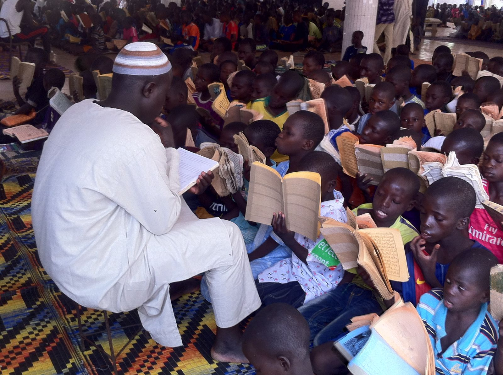
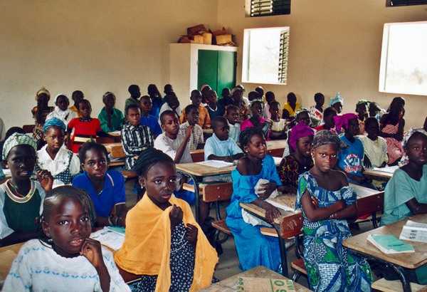

Daara is the title used in Senegal to designate the traditional Quranic schools that have ensured for centuries that Islamic education was well spread out in all segments of population in the West African countries. Daara often implement physical punishment, which to many West African Muslims is considered to be an important part of the education process. Unsurprisingly, the denomination conveys a very controversial portrait depending on the understanding one has of their usefulness in social progress. There have been frequent reports of abuse and "contemporary slavery" by organizations such as XALAAT(way of thinking) and the United Nations. These reports include accusations of financial exploitation and ill-treatment of child beggars called Talibe. Many Talibe in Senegal deliberately self-harm so they will need medical attention and be removed from the daaras.
The Senegalese education sector is divided into four levels, of which two are mandatory: pre-primary: at least 1 year between the ages of 5 and 6. elementary: 6 years between the ages of 6 and 11. lower secondary: 4 years between the ages of 12 and 15.the highest level of senegalese education systeme is at University nammed college in the US system. The fisrt and biggest University in Senegal is named after Cheikh Anta Diop ,historian and professor
 seneglese culture, main sport and roots
seneglese culture, main sport and roots